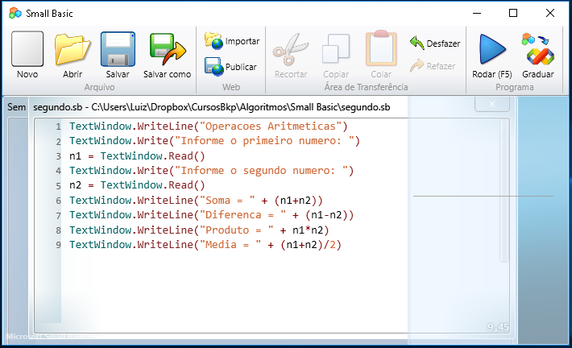

28 de junho de 2014
Primeiro contato com programação

Após ter concluído o curso básico de informática, assim como outros
cursos, como modelagem 3D, design gráfico e manutenção de
computadores, deparei-me com o anúncio do curso de lógica de
programação utilizando a linguagem Small Basic, e foi amor à primeira
codificação.